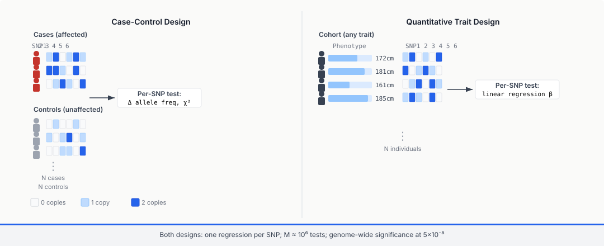
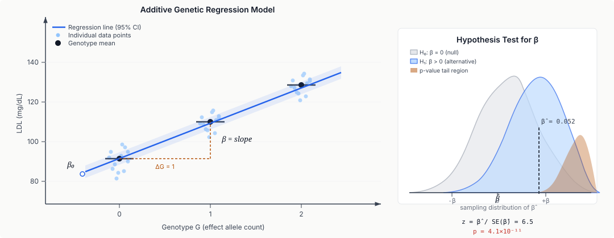

Seven moves: regress phenotype on genotype per SNP, correct for ancestry, threshold at 5×10⁻⁸, aggregate into a PRS, fine-map as a sparse inverse problem, colocalize with eQTLs, aggregate rare variants by gene.
Learning objectives
- Describe the GWAS experimental design (cases vs controls, quantitative trait cohorts) and write down the per-SNP regression model used to test association.
- Read a Manhattan plot and a QQ plot, interpret genome-wide significance ($5 \times 10^{-8}$), and diagnose inflation and LD-driven peak structure.
- Explain why the GWAS significance threshold is $5 \times 10^{-8}$ in terms of the number of effectively independent tests across the genome.
- Diagnose population-stratification confounding and correct for it using principal-component covariates and mixed-model regression (BOLT-LMM, SAIGE, REGENIE).
- Compute a basic polygenic risk score (PRS) from GWAS summary statistics and explain the portability problem across ancestries.
- Describe the fine-mapping problem as a sparse inverse problem, and apply SuSiE-style credible-set reasoning to a locus.
- Distinguish single-variant and rare-variant association tests (burden and SKAT), and explain when each is appropriate.
Part 1 · 25 min The GWAS Framework
1.1 Why association testing
By Lecture 12 you know how allele frequencies are distributed in populations and how they evolve. A fundamentally different question motivates this lecture: which genetic variants affect a phenotype? Is there a SNP whose allele count correlates with disease risk, height, LDL cholesterol, or schizophrenia susceptibility?
The simple answer (ignoring confounders for one more subsection): for each SNP in the genome, test whether its allele count is associated with the phenotype. That's a regression problem — one per SNP.
Genome-Wide Association Studies (GWAS) scale this to millions of SNPs across tens of thousands to millions of individuals. First landmark: the Wellcome Trust Case Control Consortium (WTCCC) 2007 paper testing ~500,000 SNPs in 17,000 individuals for seven common diseases. Most modern studies are 10–1000× larger: UK Biobank (~500k participants), FinnGen (~500k), All of Us (~1M), Million Veteran Program (~1M).
GWAS is now the default first-pass analysis for any genetic contribution to any trait — disease, anthropometric, behavioural, molecular. The mechanics are the same; the scale is enormous.

1.2 Per-SNP regression
The model at a single SNP is a simple regression. For a quantitative trait $Y$ (e.g. height), individual $i$, genotype $G_i \in \{0, 1, 2\}$ (count of the "effect" allele under the additive model):
$$Y_i = \beta_0 + \beta \cdot G_i + \boldsymbol{\gamma}^T \mathbf{X}_i + \varepsilon_i$$
where $\mathbf{X}_i$ is a vector of covariates (age, sex, PCs — more in §4), $\boldsymbol{\gamma}$ is the covariate effect vector, and $\varepsilon_i$ is noise. The test is: $H_0 : \beta = 0$ vs $H_1 : \beta \ne 0$.
For a binary trait (case / control), swap linear for logistic:
$$\log \frac{P(Y_i = 1)}{P(Y_i = 0)} = \beta_0 + \beta \cdot G_i + \boldsymbol{\gamma}^T \mathbf{X}_i$$
Three genetic models are standard:
- Additive ($G \in \{0, 1, 2\}$ as a numeric predictor). Default in most GWAS. Assumes each extra allele copy has the same effect.
- Dominant ($G \in \{0, 1\}$: has at least one effect allele vs none). For traits where a single copy is sufficient.
- Recessive ($G \in \{0, 1\}$: has two copies vs not). For traits where both copies matter.
The additive model is the workhorse. Most published GWAS assume it by default.

1.3 Scale: millions of SNPs, millions of people
GWAS data objects:
- Genotype matrix: $N$ individuals × $M$ SNPs. Modern arrays genotype ~1M SNPs directly; imputation (using a reference panel like TOPMed, HRC, or the HPRC pangenome) expands this to ~10M SNPs with imputed dosages.
- Phenotype vector: $N$-long vector of trait values.
- Covariate matrix: age, sex, principal components, cohort indicators — typically 10–30 columns.
The per-SNP regression runs $M$ times, producing $M$ $\hat{\beta}$ values, $M$ p-values, $M$ effect-size standard errors. The output is a GWAS summary statistic table — arguably the dominant data product of the whole field, since many downstream analyses (PRS, fine-mapping, LDSC) operate on summary stats rather than raw genotypes.
1.4 What a successful GWAS looks like
When everything works:
- Hundreds to thousands of SNPs exceed the genome-wide significance threshold.
- Peaks cluster into dozens to hundreds of independent loci (because nearby SNPs are correlated by LD).
- Effect sizes are uniformly small: $\beta$ in units of the trait's SD is typically 0.01–0.05 for common variants; odds ratios (OR) for binary traits are usually 1.02–1.2.
- Heritability explained is often modest — only 10–30% of the genetic variance attributable to the detected SNPs, the rest being "missing heritability" (Part 5).
Key cohorts to know:
- UK Biobank (~500k participants; deep phenotyping; permissive access).
- FinnGen (~500k Finns; founder-population-specific variants).
- Biobank Japan, China Kadoorie, All of Us, Million Veteran Program, H3Africa — filling out global representation.
Part 2 · 25 min The Manhattan Plot and What It Shows
2.1 Manhattan plots
A Manhattan plot is the canonical GWAS visualisation: one dot per SNP, x-axis is genomic position across all 22 autosomes plus X, y-axis is $-\log_{10}(p)$. Alternating chromosome colours make the boundaries visible. Peaks rising far above the horizontal significance line are the "hits."
What to read off it:
- Number of peaks above $5 \times 10^{-8}$: count of independent hits.
- Peak heights: strength of the association. Very tall peaks mean either very large effects or very large sample sizes.
- Peak shapes: a tall column with neighbouring SNPs also elevated signals LD-driven structure — the peak is driven by a few causal variants propagating their signal to correlated neighbours (Part 6, fine-mapping).
- Chromosome patterns: clustering of hits on specific chromosomes for polygenic traits often reflects chromosome-length and gene-density effects.

2.2 QQ plots and inflation
A QQ (quantile-quantile) plot compares observed vs expected $-\log_{10}(p)$ values. Under the null (no real signals, no confounding), the observed quantiles should match the expected ones — a straight 45° line.
Two kinds of deviation:
- Late departure (upper right): the top-right of the plot lifts above the diagonal. This is what you want to see — the strongest hits are real signals, exceeding what you'd see under pure null.
- Early departure (origin outwards): even small-p SNPs are above the diagonal. This is inflation: the whole distribution of test statistics is shifted up. Causes: population stratification (Part 4), cryptic relatedness, genotyping-batch effects, incorrect covariance modelling.
The genomic control inflation factor $\lambda_{GC}$ quantifies this:
$$\lambda_{GC} = \frac{\text{median}(\chi^2_{\text{observed}})}{\text{median}(\chi^2_{\text{null}})} = \frac{\text{median}(\chi^2_{\text{observed}})}{0.456}$$
where the denominator is the median of a $\chi^2_1$ distribution. $\lambda_{GC} = 1$ means no inflation. $\lambda_{GC} > 1.05$ suggests confounding. $\lambda_{GC} > 1.2$ is a red flag. But note: for polygenic traits with real widespread signal, $\lambda_{GC}$ also goes up above 1 because of genuine genetic signal, not just confounding. Modern practice: use LD Score regression (Part 5) to partition $\lambda_{GC}$ into "real polygenic signal" and "true confounding" components.
![Two side-by-side QQ plots of observed versus expected minus log base 10 of p. Left panel shows a well-controlled GWAS where dots follow the 45-degree reference line until the upper right where they lift off, annotated lambda GC equals 1.02, titled Well-controlled GWAS: late departure equals real signal. Right panel shows an inflated GWAS where dots lift above the line starting near the origin, annotated lambda GC equals 1.25, titled Inflated GWAS: early departure equals confounding. Bottom caption: lambda GC greater than 1.05 warrants investigation.](../diagrams/lecture-13/04-qq-plot.svg)
2.3 Interpreting peak structure via LD
A single SNP with a true effect isn't alone on a Manhattan plot. It sits in an LD block (Lecture 12) with many correlated SNPs; each of those neighbours also exceeds significance because their genotypes are correlated with the causal variant's. The "peak" around a true hit typically spans 10 kb to 1 Mb, consisting of tens to hundreds of sub-significant SNPs with only one or two causal.
This is both a blessing and a curse:
- Blessing: robust hits stand out — the peak shape (cluster of hits) is harder to fake than a single isolated tall SNP.
- Curse: you can't tell from the Manhattan plot which SNP is causal. The "lead SNP" (highest $-\log_{10}(p)$) is often not the causal variant; it's the best tag in your genotyping / imputation panel. Fine-mapping (Part 6) tries to narrow down.
Practical consequence: the first-round output of a GWAS isn't usually "this SNP causes this disease." It's "this locus (a ~100kb window) harbours a variant affecting this disease." Going from locus to causal variant is a separate analysis.
2.4 Manhattan plots as spectra
Part 3 · 25 min Multiple Testing at SNP Scale
3.1 Why $5 \times 10^{-8}$
If you run $M$ independent tests at per-test significance level $\alpha$, the expected number of false positives is $M \alpha$. Under Bonferroni correction, you demand $\alpha_{\text{adjusted}} = \alpha / M$ to keep the family-wise false-positive rate below $\alpha$.
For a 0.05 FWER threshold and $M = 1{,}000{,}000$ independent tests:
$$\alpha_{\text{adjusted}} = 0.05 / 10^6 = 5 \times 10^{-8}$$
That's the origin of the $5 \times 10^{-8}$ genome-wide threshold. The key number is $10^6$ — the effective number of independent tests across the genome. Empirically (Risch & Merikangas 1996; Pe'er et al. 2008), the number of LD-independent SNPs in European populations is about $10^6$, despite there being ~10M SNPs after imputation. Similar exercises in African populations give ~1.5×10⁶ because of shorter LD blocks.
Why not use all 10M imputed SNPs as the test count? Because they're not independent — adjacent SNPs are in LD, so testing each of them gives correlated p-values. Using the physical SNP count in Bonferroni would over-correct dramatically; using 1 million (the LD-independent count) is right.
![Three stacked rows all sharing a genomic coordinate axis representing 1 megabase. Top row: approximately 300 dense tick marks labelled approximately 10 million SNPs genome-wide imputed with badge M raw approximately 10 to the 7. Middle row: same position but tick marks grouped into about 30 wider LD block rectangles labelled approximately 1 million LD-independent blocks with badge M effective approximately 10 to the 6. Bottom: large equation alpha adjusted equals 0.05 divided by M effective equals 0.05 divided by 10 to the 6 equals 5 times 10 to the minus 8 labelled as the genome-wide significance threshold.](../diagrams/lecture-13/05-effective-tests.svg)
3.2 FWER vs FDR
Two different error-control philosophies:
- Family-Wise Error Rate (FWER): probability of any false positive across all tests. Controlled by Bonferroni or its variants (Holm, Hochberg). Strict and conservative.
- False Discovery Rate (FDR): expected fraction of discoveries that are false. Controlled by the Benjamini-Hochberg procedure. Lets more real hits through at the cost of a known contamination rate.
GWAS traditionally uses FWER (Bonferroni at $5 \times 10^{-8}$). Reason: the field wants near-certainty at each reported hit, because each hit becomes a biological hypothesis that downstream work will spend years investigating. A 5% FDR would mean 1 in 20 hits is bogus — too noisy for the downstream fine-mapping, functional validation, and clinical interpretation to absorb.
Some sub-fields (e.g. transcriptome-wide association studies of gene expression) use FDR instead. The choice depends on what downstream tolerance for false positives looks like.
3.3 Power calculations
For any GWAS, power depends on four quantities:
- Effect size $\beta$ (smaller = harder to detect).
- Allele frequency $p$ (lower = harder because fewer informative individuals).
- Sample size $N$.
- Significance threshold $\alpha$.
The test statistic for an additive model is roughly:
$$\chi^2 \approx N \cdot 2p(1-p) \cdot \beta^2 / \sigma^2$$
To detect $\beta = 0.02$ SD at $p = 0.2$ (common variant) with $\alpha = 5 \times 10^{-8}$ and power 0.8, you need approximately $N \approx 226{,}000$. Hundreds of thousands of samples for a single $\beta = 0.02$ variant. This is why GWAS cohort sizes have been racing upward.
For rare variants ($p = 0.001$, $\beta = 0.1$), power at $N = 10^5$ is ~3%. Single-variant testing on rare variants is underpowered; Part 7 covers the alternative.
3.4 Callback thread
Part 4 · 40 min Confounders and Corrections
4.1 Population stratification
The biggest confounder in GWAS is population stratification: systematic allele-frequency differences between groups that also differ in phenotype for non-genetic reasons.
Classic toy example: if your cohort is 60% North European and 40% South European, and the trait is something cultural (say, a dietary preference), then SNPs whose allele frequencies differ between the two groups will "predict" the trait — through ancestry, not genetics. The association is real (allele counts correlate with phenotype) but causally spurious (the actual driver is ancestry).
Stratification is the default state of any non-randomised cohort. It can never be eliminated; it can only be corrected. Without correction, a GWAS inflates across the board — visible as QQ-plot early departure and $\lambda_{GC} > 1$.
![Two side-by-side scatter plots of PC1 versus PC2 of a GWAS cohort's genotype matrix. Left: points coloured by ancestry showing five visible clusters labeled European in cobalt, East Asian in red, African in amber, South Asian in green, and admixed American in violet. Axis labels PC1 explains 4.2 percent and PC2 explains 1.8 percent. Right: same point positions but coloured by phenotype value on a continuous grey-to-amber scale. A gradient visible with lower values on the European side and higher values on the African side. Annotation reads: phenotype tracks ancestry and uncorrected GWAS will call ancestry-differentiated SNPs significant.](../diagrams/lecture-13/06-pca-structure.svg)
4.2 PCA correction
The standard first-line correction: compute principal components of the genotype matrix (SNP × individual) and include the top $k$ PCs as covariates in every per-SNP regression.
Algorithm:
- Centre and scale the genotype matrix. Optionally prune it to common, unlinked SNPs.
- Compute the top $k$ eigenvectors of the genotype covariance matrix (typically $k = 5$–$20$).
- For each individual, extract their loadings on these PCs.
- Include them as covariates in the per-SNP regression.
The intuition: the top PCs capture population structure (inter-individual variation in allele frequencies that has a low-rank structure). Conditioning on them removes the between-group signal and keeps the within-group genetic variation.
How many PCs? Typically 10 for homogeneous cohorts, 20 for heterogeneous ones (UK Biobank uses 40 for some analyses). Too few leaves residual stratification; too many eats statistical power (each PC costs one degree of freedom).
4.3 Cryptic relatedness and kinship
A second confounder: cryptic relatedness. Even in nominally-unrelated cohorts, by chance some pairs of participants are cousins or more distant relatives. Relatives share alleles beyond what's expected by chance; failure to account for this inflates test statistics at correlated SNPs.
Solution: compute a kinship matrix $\mathbf{K}$ (or Genetic Relationship Matrix, GRM) capturing pairwise genetic similarity across all participants. Entry $K_{ij}$ is roughly the fraction of alleles shared identical-by-descent between individuals $i$ and $j$. For unrelated pairs, $K_{ij} \approx 0$. For parent-child, $K_{ij} \approx 0.5$. For second cousins, $K_{ij} \approx 0.03$.
![A square 100 by 100 kinship matrix heatmap with colour scale from white at kinship zero (unrelated) to deep cobalt at kinship 0.5 (first-degree relative). The diagonal is uniformly dark cobalt. Two small off-diagonal blocks highlighted with amber rectangles: a 3 by 3 block near position 20 (a sibling trio) and a 2 by 2 block near position 70 (a parent-child pair). Colour legend on the right: 0.0 unrelated, 0.05 second cousin, 0.25 half-sibling, 0.5 MZ twin or self. Annotation below: BOLT-LMM, SAIGE, and REGENIE all consume this matrix as a random-effect covariance component.](../diagrams/lecture-13/07-kinship-matrix.svg)
4.4 Mixed-model regression
The modern workhorse for GWAS at biobank scale is mixed-model regression: fit each SNP with both fixed (per-SNP effect, covariates) and random (individual-level residuals with kinship-structured covariance) effects.
Model for a quantitative trait:
$$\mathbf{Y} = \mathbf{X} \boldsymbol{\gamma} + G \beta + \mathbf{u} + \boldsymbol{\varepsilon}$$
where $\mathbf{u} \sim \mathcal{N}(0, \sigma_g^2 \mathbf{K})$ is a random effect with kinship-structured covariance, and $\boldsymbol{\varepsilon} \sim \mathcal{N}(0, \sigma_e^2 \mathbf{I})$ is residual noise.
This is a generalised least squares problem. The per-SNP estimate is:
$$\hat{\beta} = (G^T \mathbf{V}^{-1} G)^{-1} G^T \mathbf{V}^{-1} \mathbf{Y}$$
where $\mathbf{V} = \sigma_g^2 \mathbf{K} + \sigma_e^2 \mathbf{I}$ is the total-covariance matrix. Modern tools use algorithmic shortcuts to avoid full $N^2$ matrix inversion:
- BOLT-LMM (Loh et al. 2015): iterative methods + spectral tricks; scales to N > 500k. Default for quantitative traits.
- SAIGE (Zhou et al. 2018): saddle-point approximation for case-control imbalance. Default for imbalanced binary traits.
- REGENIE (Mbatchou et al. 2021): two-stage ridge regression + single-SNP test; scales to UK Biobank's 500k × 10M SNPs.
![Two side-by-side QQ panels for the same cohort. Left panel: OLS regression QQ plot where the dot cloud lifts above the 45-degree reference line starting at low minus log p, annotated OLS lambda GC equals 1.15 and No kinship adjustment inflated. Right panel: LMM regression QQ plot where dots follow the reference line closely and only lift off in the upper right tail, annotated LMM lambda GC equals 1.02 and Kinship-structured covariance absorbs relatedness. A small arrow between panels labelled noise whitening via V inverse. Shared caption: same cohort, two methods. OLS: GLS with V equals I. LMM: GLS with V equals sigma g squared K plus sigma e squared I.](../diagrams/lecture-13/08-lmm-vs-ols.svg)
4.5 Batch effects and technical confounders
Beyond genetics, technical confounders are widespread:
- Genotyping batch: different plates, machines, or time periods produce systematically different genotype calls. Include batch indicator as a covariate.
- DNA source (blood vs saliva): occasionally produces SNP-specific biases.
- Imputation quality: imputed SNPs with low confidence scores inflate the test.
- Phenotype measurement heterogeneity (multi-centre studies): include centre indicators.
Part 5 · 30 min Beyond Single-SNP: Heritability and Polygenic Risk
5.1 Heritability
Heritability $h^2$ is the fraction of phenotypic variance explained by genetic variation:
$$h^2 = \sigma_g^2 / \sigma_p^2$$
where $\sigma_g^2$ is genetic variance, $\sigma_p^2$ is total phenotypic variance. Two flavours:
- Broad-sense heritability $H^2$: all genetic effects (additive + dominance + epistasis).
- Narrow-sense heritability $h^2$: additive genetic effects only.
GWAS typically targets $h^2$ (additive). Modern SNP-heritability estimates use GWAS data directly:
- GCTA (Yang et al. 2011): computes $h^2$ from the kinship matrix + phenotype via REML.
- LDSC (Bulik-Sullivan et al. 2015): computes $h^2$ from summary statistics alone, exploiting the relationship between a SNP's LD score and its expected $\chi^2$ under polygenic signal.
5.2 LD Score regression
LDSC is the most influential summary-statistic method of the 2010s. The idea: under polygenic signal, a SNP's expected $\chi^2$ statistic should scale with how many other SNPs it's in LD with (its "LD score"). Specifically:
$$\mathbb{E}[\chi^2_j] = 1 + N h^2 \ell_j / M + N a$$
where $\ell_j$ is the LD score of SNP $j$ (sum of $r^2$ with all neighbouring SNPs), $N$ is sample size, $M$ is total SNP count, and $a$ captures confounding.
Regressing $\chi^2$ on LD score across all SNPs gives:
- Slope $\propto h^2$ (the polygenic signal).
- Intercept $\approx 1 + a$ (the confounding offset).
This separates real polygenic signal from confounding inflation — the key diagnostic $\lambda_{GC}$ alone can't do. A GWAS with high $\lambda_{GC}$ and high LDSC slope but intercept near 1 is polygenic, not confounded.
5.3 Missing heritability
Heritability estimates for polygenic traits (height, IQ, schizophrenia) are typically $h^2 \approx 0.5$–$0.8$ from twin studies. But summing up the effects of GWAS-significant hits explains only a fraction — perhaps 10–40% — of the variance. The rest is "missing."
Where is it?
- Many small effects below genome-wide significance. Individual SNPs don't cross $5 \times 10^{-8}$ but contribute collectively. PRS (§5.4) captures these implicitly.
- Rare variants. Common-SNP arrays miss low-frequency variation; sequencing + burden tests (Part 7) recover some.
- Structural variants. Under-captured by SNP arrays; better with long-read sequencing (Lecture 11) and pangenome references.
- Gene × environment interactions. Hard to estimate; some missing heritability hides here.
Current consensus: for most common diseases, genuine common-variant polygenic contribution is large (70–80% of heritability is capturable in principle) but individual variants are so weak that power-limited GWAS hasn't found them all yet. Larger cohorts progressively recover more.
5.4 Polygenic Risk Scores
A polygenic risk score (PRS) aggregates signal across many SNPs into a single per-individual score. For individual $i$:
$$\text{PRS}_i = \sum_j \hat{\beta}_j G_{ij}$$
where $\hat{\beta}_j$ is the GWAS-estimated effect of SNP $j$ and $G_{ij}$ is the individual's allele count. Variants include "clumping + thresholding" (C+T; only include SNPs at $p < \alpha$, pruned for LD), Bayesian shrinkage methods (LDpred, PRS-CS, SBayesR), and deep-learning extensions.
PRS is becoming clinically relevant:
- Coronary artery disease: top 1% of PRS has ~3× the population risk — comparable to rare Mendelian variants for this trait.
- Breast cancer: PRS identifies a ~20% of women in whom lifetime risk approaches BRCA1-carrier risk.
- Psychiatric traits: PRS-schizophrenia accounts for a meaningful fraction of within-family variance.
The portability problem: A PRS trained in European individuals performs ~3–5× worse in non-European ancestry. Reasons:
- Allele frequencies differ — SNPs common in Europeans are rare or absent in Africans; those SNPs contribute nothing in the wrong population.
- LD patterns differ — the "tag SNPs" in the training cohort aren't tagging the same causal variants in a different ancestry.
- Effect-size heterogeneity — real causal variants have different effects across ancestries (gene-environment interactions, epistasis with background).
The practical and ethical consequences are severe. PRS-based clinical tools trained exclusively on European data underperform in minority populations, potentially worsening health disparities. Resolving this requires equally-sized GWAS in each ancestry, which doesn't yet exist for most traits.
![Left panel: three stacked violin plots of PRS distribution per ancestry (EUR, EAS, AFR) all centred near 0 with similar spread. Right panel: bar chart of R-squared of PRS versus phenotype per ancestry. EUR bar cobalt R-squared equals 0.12 (tallest). EAS bar amber R-squared equals 0.05. AFR bar red R-squared equals 0.03. Baseline dashed line at R-squared equals 0. Caption: PRS trained on UK-Biobank-style European GWAS. Portability drops with genetic distance from training population. Remedies: diverse GWAS plus ancestry-aware PRS methods.](../diagrams/lecture-13/09-prs-portability.svg)
Part 6 · 30 min Fine-Mapping and Colocalization
6.1 From peak to causal variant
A GWAS peak is not a variant; it's a locus containing tens to hundreds of correlated SNPs, one or a few of which is causal. Fine-mapping is the inverse problem of identifying the causal variant(s) from the peak.
This is hard because:
- SNPs in LD have highly correlated test statistics. The most-significant SNP often isn't the causal one; it's the closest tag in the array / imputation panel.
- Multiple causal variants can coexist in a locus — the sum of their LD-propagated signals is the visible peak.
- Rare causal variants in LD with more common tagging SNPs mis-attribute signal to the common tag.
Classical fine-mapping used conditional analysis: regress on the top SNP, re-test all others, identify whether any remaining peak survives. Modern approaches are statistical (Bayesian) and return a credible set — a set of SNPs guaranteed to contain the causal variant with specified posterior probability.
6.2 SuSiE, FINEMAP, CAVIAR
SuSiE (Sum of Single Effects; Wang et al. 2020) reformulates fine-mapping as sparse Bayesian regression:
$$\mathbf{Y} = \sum_{l=1}^{L} \sum_{j=1}^{M} \gamma_{lj} X_j \beta_{lj} + \boldsymbol{\varepsilon}$$
where $L$ is the assumed number of causal signals per locus, and $\gamma_{lj}$ is a one-hot indicator of which SNP drives signal $l$. Output: a posterior inclusion probability (PIP) for each SNP, and one credible set per signal (a set of SNPs whose total PIP > 0.95 for that signal).
FINEMAP (Benner et al. 2016): shotgun stochastic search over configurations of causal SNPs (0, 1, 2, … simultaneously causal). Posterior over configurations; credible sets derived.
CAVIAR (Hormozdiari et al. 2014): early, elegant Bayesian formulation. Assumes a maximum number of causal variants and enumerates configurations.
All three require the LD matrix $\mathbf{R}$ as input — typically computed from the GWAS cohort itself or a reference panel. They need summary statistics and LD; they don't need individual-level genotype data.
![Three stacked genomic tracks sharing a 300 kilobase coordinate axis. Top track: minus log p per SNP with a clear peak rising to 25 at the centre. Middle track: LD (r-squared) colour scale from grey below 0.2 to orange 0.2 to 0.5 to deep red above 0.8 for each SNP relative to the lead SNP, showing a classic LD block shape. Bottom track: SuSiE posterior inclusion probability bars per SNP, most near zero and five SNPs highlighted in amber as the 95 percent credible set annotated: 95 percent credible set 5 SNPs total PIP equals 0.97. One SNP has PIP 0.48. Caption: fine-mapping narrows 200 peak SNPs to 5 candidates.](../diagrams/lecture-13/10-fine-mapping.svg)
6.3 Colocalization
A GWAS signal says a variant in the locus affects the trait. It doesn't say which gene or how. Colocalization adds a mechanistic layer: does the GWAS signal match the signal from an expression QTL (eQTL)?
coloc (Giambartolomei et al. 2014) tests five hypotheses at each locus:
- $H_0$: no association with either trait.
- $H_1$: association with trait 1 only.
- $H_2$: association with trait 2 only.
- $H_3$: both associated, but different causal variants.
- $H_4$: both associated, same causal variant.
$P(H_4) > 0.8$ is the standard threshold for claiming colocalization. Large eQTL datasets (GTEx, eQTLGen, CommonMind) make colocalization routine. Typical success rate: ~20–40% of GWAS loci colocalise with at least one eQTL tissue.
![Two stacked locus-zoom panels sharing a 200 kilobase genomic coordinate axis. Top panel: GWAS minus log p for LDL cholesterol with a peak at position approximately 100 kb rising to 18. Bottom panel: eQTL minus log p for SORT1 in liver tissue with a peak at the same position rising to 15. Both lead SNPs annotated at the same location. A vertical dashed line through both panels marks the shared peak position. Annotation box on right showing coloc output: P H0 equals 0.00, P H1 equals 0.02, P H2 equals 0.00, P H3 equals 0.05, P H4 equals 0.93. Arrow and label: colocalizes and SORT1 is a candidate causal gene for LDL regulation.](../diagrams/lecture-13/11-colocalization.svg)
6.4 Fine-mapping as spectral inversion
6.5 When fine-mapping fails
Fine-mapping fails when:
- Credible sets remain huge (>50 SNPs): locus has many equally-good candidates, often because the causal variant isn't in the panel or because LD is very tight. Improving the panel (WGS imputation, denser reference) shrinks the set.
- Multiple signals present but poorly separated: SuSiE with $L = 5$ finds 5 signals, but credible sets overlap heavily. Usually needs more data.
- Causal variant is structural: fine-mapping assumes SNP-based signal. If the causal is a CNV or SV not captured by the array, fine-mapping converges to a tagging SNP nearby the SV but isn't causal.
Realistic success rate: for well-powered loci (lead $p < 10^{-20}$ in large European cohorts), single-variant resolution is achieved at maybe 30% of loci. The rest remain candidate-set-level.
Part 7 · 25 min Rare-Variant Association
7.1 Why single-SNP fails on rare variants
For very rare variants ($\text{MAF} < 0.01$), single-variant GWAS is underpowered:
- Variance of $\hat{\beta}$ scales as $1 / [N \cdot 2p(1-p)]$.
- At $p = 0.001$, $2p(1-p) \approx 0.002$ — 250× smaller than at $p = 0.5$.
- Detecting $\beta = 0.1$ at $\alpha = 5 \times 10^{-8}$ with 80% power needs $N \approx 10^8$ — no cohort is that large.
The workaround: aggregate rare variants within some grouping (usually a gene) and test the group collectively for association. If a gene harbours many rare loss-of-function variants in cases but few in controls, there's signal even though no individual variant is individually significant.
7.2 Burden tests
Burden tests collapse all rare variants in a gene into a single summary statistic per individual, then regress phenotype on that summary:
$$\text{BurdenScore}_i = \sum_{j \in \text{gene}} w_j G_{ij}$$
where $G_{ij}$ is genotype at rare variant $j$ in the gene and $w_j$ is a weight (often 1, or inverse-allele-frequency weighted, or functional-impact weighted).
The regression:
$$Y_i = \beta_0 + \beta_{\text{burden}} \cdot \text{BurdenScore}_i + \boldsymbol{\gamma}^T \mathbf{X}_i + \varepsilon_i$$
One test per gene → ~20,000 tests, not millions. Bonferroni threshold is $0.05 / 20{,}000 = 2.5 \times 10^{-6}$ — much less stringent than single-SNP.
Works great when: most rare variants in the gene have effects in the same direction (e.g. all loss-of-function). Fails when variants have mixed directions (some gain of function, some loss) — they cancel in the sum.
7.3 SKAT and SKAT-O
SKAT (Sequence Kernel Association Test; Wu et al. 2011) fixes the "mixed directions" problem:
$$Q = (\mathbf{Y} - \boldsymbol{\mu})^T \mathbf{G} \mathbf{W} \mathbf{G}^T (\mathbf{Y} - \boldsymbol{\mu})$$
where $\mathbf{G}$ is the gene's genotype matrix (rare variants only) and $\mathbf{W}$ is a diagonal weight matrix. Under the null, $Q$ follows a mixture of chi-squared distributions (Davies approximation).
Intuition: SKAT is a kernel test — it compares the phenotype variance explained by the gene's genotype kernel against a null. Unlike the burden test, SKAT doesn't assume directional concordance; it just asks "does this gene's genotype collectively explain phenotype variance?"
SKAT-O (Lee et al. 2012) combines burden and SKAT adaptively: an optimally-weighted hybrid that gets the best of both depending on the underlying directional pattern of variants. Default choice for modern rare-variant GWAS.
![Three side-by-side gene cartoons, each a long horizontal rectangle representing a gene with approximately 20 rare variant tick marks along its body coloured by direction. Left case: all variants coloured red (deleterious) with label all same direction and annotation burden test fires. Middle case: variants mixed red and green (deleterious and protective) with label mixed directions and annotation burden cancels but SKAT detects. Right case: most variants grey (neutral) with a few large red variants with label mostly neutral few large effects and annotation SKAT detects through kernel weighting. Table below summarising which test wins in each regime.](../diagrams/lecture-13/12-burden-skat.svg)
7.4 Data sources: gnomAD and friends
Rare-variant testing needs sequencing, not arrays. Key resources:
- gnomAD (Karczewski et al. 2020): >800k exomes + >150k genomes from healthy populations. Standard source for rare-variant allele frequencies. Every clinical genetics pipeline uses gnomAD as the "is this variant rare?" reference.
- UK Biobank exome / WGS releases: exomes for all 500k; WGS for ~500k (released 2022–23). Powers rare-variant burden tests across hundreds of traits.
- TOPMed (~150k whole genomes, US multi-ethnic): rare variants in diverse populations.
7.5 Rare-variant caveats
- Annotation-dependent: burden tests require a definition of "rare functional variants in this gene." Definitions vary (LoF only vs LoF + missense, allele-frequency cutoffs at 0.01 vs 0.001, etc.). Sensitivity analyses across definitions are standard.
- Genotyping / calling errors are amplified: false-positive rare variant calls directly inflate the burden. QC is more demanding than for common variants.
- Case-control imbalance is severe: SAIGE-GENE / REGENIE-GENE handle this.
Wrap-up · 10 min Takeaways, homework, and next lecture
What you should take away
- GWAS is a bank of per-SNP regressions with the phenotype as outcome, genotype as predictor, covariates including PCs, age, sex, and batch. At biobank scale this is a massively-multichannel detection problem.
- Genome-wide significance is $5 \times 10^{-8}$ — Bonferroni correction for ~10⁶ LD-independent tests. The Manhattan plot displays the signal; the QQ plot checks calibration.
- Population stratification inflates every SNP uniformly. PCA correction (top 10–40 PCs as covariates) is the first line of defence; mixed-model regression with kinship (BOLT-LMM, SAIGE, REGENIE) is the modern workhorse.
- LD Score regression separates polygenic signal from confounding using summary statistics alone. Slope ∝ heritability; intercept ∝ confounding.
- Polygenic Risk Scores aggregate signal across the genome into a per-individual score. PRS has real clinical utility for coronary disease, breast cancer, schizophrenia — but portability across ancestries is ~3–5× worse when training data is European-dominated.
- Fine-mapping is a sparse inverse problem. SuSiE, FINEMAP, CAVIAR return credible sets — small groups of SNPs that collectively explain the locus signal with specified posterior probability.
- Colocalization links GWAS loci to genes via matched eQTL signal. coloc's $P(H_4) > 0.8$ is the standard threshold.
- Rare-variant GWAS uses burden tests and SKAT. Single-variant testing fails below MAF ~0.01; aggregation across a gene recovers power. gnomAD is the standard rare-variant reference.
Next lecture
Data engineering, file formats, and reproducibility. FASTQ → BAM/CRAM; VCF/BCF; HDF5/Zarr for single-cell; Parquet for tabular omics. SRA/ENA/GEO/dbGaP data repositories. Containerization (Docker, Singularity) and the dependency-hell problem. Workflow languages (Nextflow, Snakemake, WDL). GIAB truth sets and benchmarking. The culture of bioinformatics: preprints, nf-core, open-source norms.
Homework
- Download the 1000 Genomes chr22 genotype data + a simulated phenotype. Run a per-SNP linear regression. Plot the Manhattan and QQ plots. Report $\lambda_{GC}$.
- Re-run the same GWAS including 10 principal components as covariates. Report the new QQ plot and $\lambda_{GC}$. Did inflation go down?
- Compute a PRS from a published GWAS summary statistic (e.g. for height from the Yengo et al. meta-analysis). Apply it to a held-out cohort. Report $R^2$ of PRS vs phenotype.
- At a single well-known GWAS locus (e.g. FTO for BMI), run SuSiE on the summary statistics + LD. Report the credible set(s). What's the smallest credible set you can achieve?
- Use gnomAD to check the allele frequency of three variants: rs334 (sickle cell), rs80357906 (BRCA1), and rs1815739 (ACTN3). Comment on how MAF and population structure affect each.
Recommended reading
- Klein, R. J. et al. (2005). Complement factor H polymorphism in age-related macular degeneration. Science 308, 385–389. (First widely-cited GWAS.)
- Wellcome Trust Case Control Consortium (2007). Genome-wide association study of 14,000 cases of seven common diseases and 3,000 shared controls. Nature 447, 661–678.
- Visscher, P. M., Wray, N. R., Zhang, Q., et al. (2017). 10 years of GWAS discovery: biology, function, and translation. American Journal of Human Genetics 101, 5–22.
- Price, A. L., Patterson, N. J., Plenge, R. M., et al. (2006). Principal components analysis corrects for stratification in genome-wide association studies. Nature Genetics 38, 904–909.
- Loh, P. R., Tucker, G., Bulik-Sullivan, B. K., et al. (2015). Efficient Bayesian mixed-model analysis increases association power in large cohorts. Nature Genetics 47, 284–290. (BOLT-LMM.)
- Zhou, W., Nielsen, J. B., Fritsche, L. G., et al. (2018). Efficiently controlling for case-control imbalance and sample relatedness in large-scale genetic association studies. Nature Genetics 50, 1335–1341. (SAIGE.)
- Mbatchou, J., Barnard, L., Backman, J., et al. (2021). Computationally efficient whole-genome regression for quantitative and binary traits. Nature Genetics 53, 1097–1103. (REGENIE.)
- Bulik-Sullivan, B. K., Loh, P. R., Finucane, H. K., et al. (2015). LD Score regression distinguishes confounding from polygenicity in genome-wide association studies. Nature Genetics 47, 291–295. (LDSC.)
- Wang, G., Sarkar, A., Carbonetto, P., & Stephens, M. (2020). A simple new approach to variable selection in regression, with application to genetic fine-mapping. Journal of the Royal Statistical Society, Series B 82, 1273–1300. (SuSiE.)
- Giambartolomei, C., Vukcevic, D., Schadt, E. E., et al. (2014). Bayesian test for colocalisation between pairs of genetic association studies using summary statistics. PLoS Genetics 10, e1004383. (coloc.)
- Wu, M. C., Lee, S., Cai, T., et al. (2011). Rare-variant association testing for sequencing data with the sequence kernel association test. American Journal of Human Genetics 89, 82–93. (SKAT.)
- Lee, S., Emond, M. J., Bamshad, M. J., et al. (2012). Optimal unified approach for rare-variant association testing with application to small-sample case-control whole-exome sequencing studies. American Journal of Human Genetics 91, 224–237. (SKAT-O.)
- Karczewski, K. J., Francioli, L. C., Tiao, G., et al. (2020). The mutational constraint spectrum quantified from variation in 141,456 humans. Nature 581, 434–443. (gnomAD.)
- Martin, A. R., Kanai, M., Kamatani, Y., et al. (2019). Clinical use of current polygenic risk scores may exacerbate health disparities. Nature Genetics 51, 584–591. (PRS portability.)
Appendix — timing summary
| Block | Time | Cumulative |
|---|---|---|
| Part 1 — The GWAS Framework | 25 min | 0:25 |
| Part 2 — The Manhattan Plot and What It Shows | 25 min | 0:50 |
| Part 3 — Multiple Testing at SNP Scale | 25 min | 1:15 |
| Part 4 — Confounders and Corrections | 40 min | 1:55 |
| Part 5 — Beyond Single-SNP: Heritability and PRS | 30 min | 2:25 |
| Part 6 — Fine-Mapping and Colocalization | 30 min | 2:55 |
| Part 7 — Rare-Variant Association | 25 min | 3:20 |
| Wrap-up | 10 min | 3:30 |
Total: ~3h 30min of content.